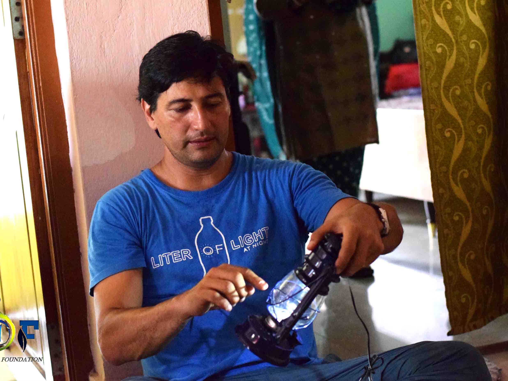
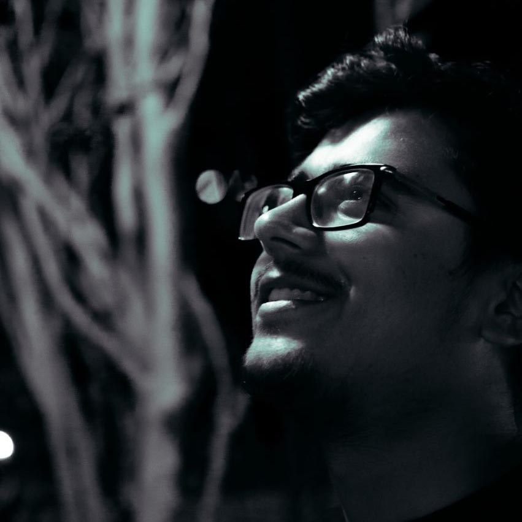
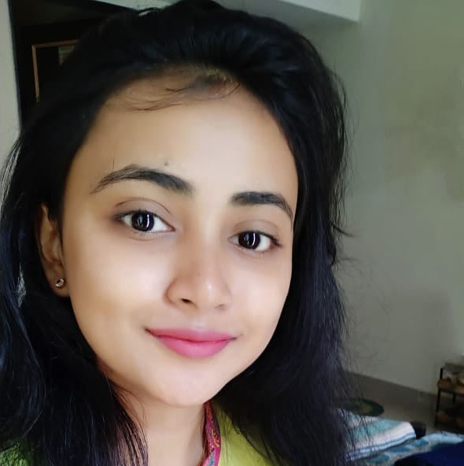
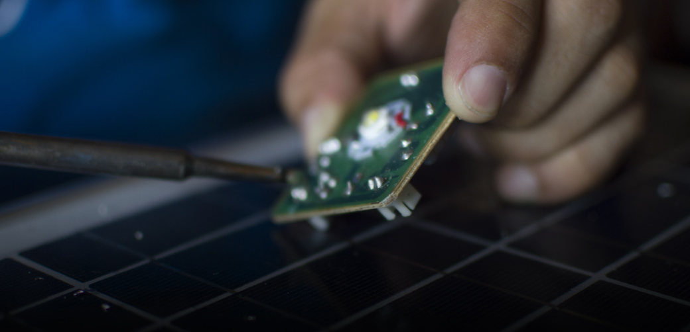
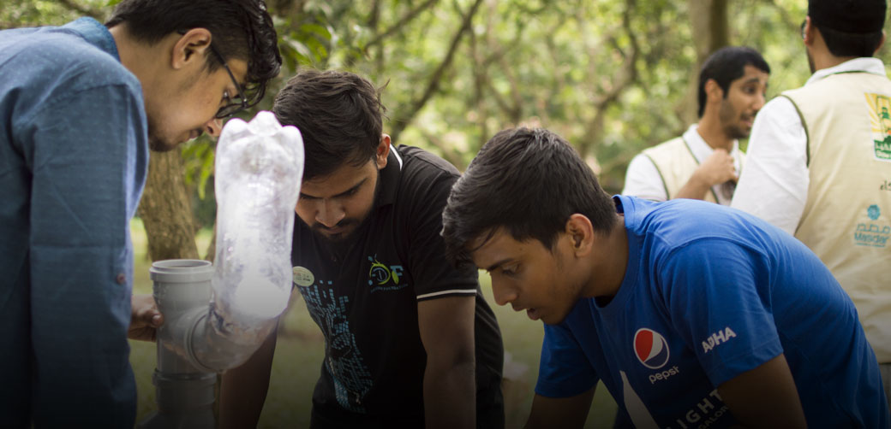
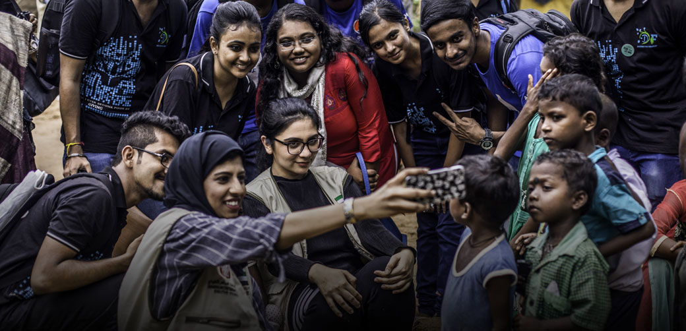
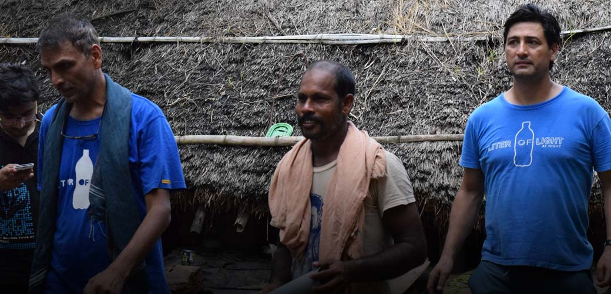

In 2015, Desire Foundation took steps to illuminate houses
in the slums of Bhubhaneshwar which were still in darkness.
The concept which originated in Brazil is an ecofriendly and
longlasting way to light homes. We utilized disposed plastic
bottles and hung it from the ceiling's of the houses in the
slum to provide an enduring source of light.
On 25th August, Illac Diaz (founder of Liter of Light) and
delegates from UAE were present to make solar lights and
solar lamps with us. Pankaj Dixit from Liter of Light,
Bangalore was also present. On August 26, Ward no. 5 under
BMC were provided with solar lamps and children got study
lamp too, through which they got a chance to study at night.
During the day the solar lights will charge and will glow
during night. Three solar lights were also installed of
which the lights switches on automatically in the dark and
switches off when day arrives.Things taken from waste
materials were used to make street lights. No metal rods
were used, instead bamboo was used to put those lights.
Plastic PVC pipes were also used. No glass bulbs were used,
rather plastic bottles were utilized for lighting, in a
eco-friendly manner.

Being the POC of this project was one of
the best experiences at desire
foundation. I learnt handling bigger
responsibilities and delivering work
within short span of time with the help
of a great team which supported till end
amidst examinations and other academic
works. Interacting and receiving foreign
delegates, people from UAE and other
Liter Of Light founders, heads from
Philippines and Bangalore, was once in a
lifetime experience. Apart from all
these, the greatest happiness was seeing
the smiling faces of the people in the
slum after installation of solar lamps.
This project experience will always
remain close to my heart and one of the
most beautiful memory of my college life
that I’ll will cherish forever. Good
luck to all present super heroes of
desire
Yash Manek, Alumni
Liter of light is one of the most
interesting projects in Desire. Working
with the Liter of Light founder Iliac
Diaz and foreign delegates was a great
experience. Learning the leadership
skills and taking the responsibilities
of food, videography was really a great
fun for me. The project was just the day
before our Mid semester examination yet
doing the project successfully for the
poor people was really nice. Lighting up
two slums made me happy.
Siddhartha Bhattacharyya, Social
Changemaker

My journey in Desire Foundation has been
a true learning experience in my life. I
joined Desire when I was in the first
year of my college and didn't have much
insights about the problems of the
world. Going for the surveys,
interacting with the deprived part of
society, seeing the happiness and
content on the faces of parents whose
kids got into school, has filled me with
empathy and awareness towards people and
the different problems they face on a
daily basis. I also have had the
opportunity to get to know and work with
so many amazing people from whom I have
definitely learnt a lot. I am thankful
to Desire for making me the person that
I am today.
Sreyashi Das, Alumni

Liter Of Light
An idea can change lives

Liter Of Light
Desire interns imparting training

Liter Of Light
Partnership between Liter of Light and
Desire Foundation on way to light up lives

Liter Of Light
The voyage of light
Previous
Next
-Illac Diaz